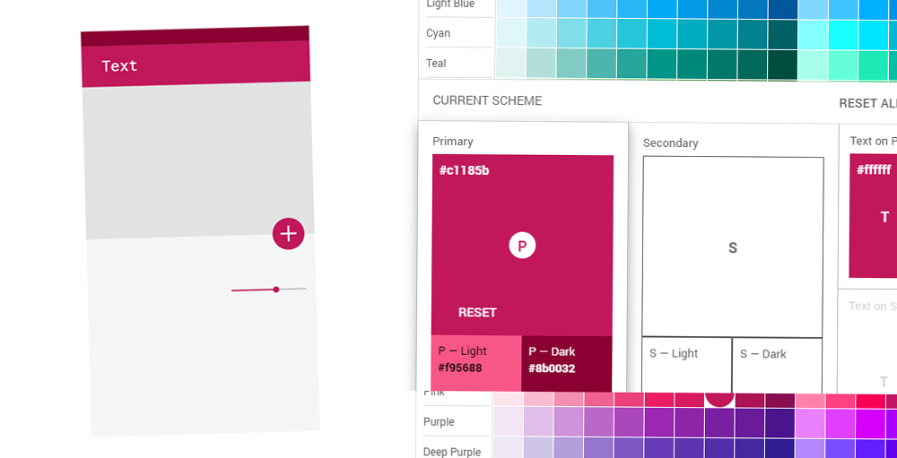

1. Colordot
Color.HailPixel.com
Colordot from HailPixel if a color picker designed for human. It's intuitive, fast and beautiful. Build palettes with a swipe of your finger or use your camera to capture colors from the wolrd around you. Colordot is perfect for web developers, illustrators, interior designers and anyone who loves color!
This is one of the better color pallets apps I've used. The color control feels intuitive and natural on my iPad as well.
2. Color Hunt
ColorHunt.com
Color hunt is a free and open platform for color inspiration with thousands of trendy hand-picked color palettes. Colors Hunt got featured in many different websites, nlogs, social networkds and magazines related to design.
The best designers and artist share their palettes. I strongly recommend it for developers who are not designers and don't know how to match colors.

3. Image Color Picker<
ImageColorPicker.com
ImageColorPicker pickes your colors from any image online. Use the online image color picker to select a color and get the html Color Code of the selected pixel. You get the HEX, RGB and HSV color coding formats. You can either upload and image from your computer on open and online URL.. A thumbnail is generated if you choose a URL to a website.
This tool is bery practical and convenient. It is common to pick colors from picture and many artists do it to build their palette!

4. Material.io
Material.io/Resources/Color
Color Tool from Material.io makes it easy for you to create a color palette from only one dominant color. Use it to create, share and apply color palettes to your UI, as well as measure the accessibility level of any color combination.
This is one of the most comprehensive color picker for designers. It is very helpful when you have one color in mind but don't know how and where to place it in your UI

5. Palette.site
Palette.site
Palette.site allows you to get the essential colours from any website. This browser extension generates comprehensive palettes and is a must-have tool for designers and frontend developers. It's a free colour scheme extraction.
We browse beautiful websites everyday! Why don't use this tool to extract the colors and understand the color choice of great designers and thus become a great artist!